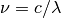
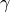
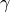
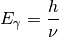
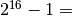
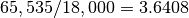
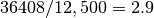

Astrophysics Crib Sheet¶
Wavelength ( ) is related to frequency ( nu not v) by the speed
of light () :
) is related to frequency ( nu not v) by the speed
of light () :

Energy ( ) of a photon () given its frequency () .
) of a photon () given its frequency () .

Statistics:¶
Many small cameras (if the pixels are small you need to pay
attention), have well-depths that are less than 
65,535. They will use a gain of  such that when divided into
the well-depth it will fluff the electron counts up. You need
10,000 electrons to achieve a 1% result. To first order (back-of-the-envelope)
a count of 10,000 electrons will have .
such that when divided into
the well-depth it will fluff the electron counts up. You need
10,000 electrons to achieve a 1% result. To first order (back-of-the-envelope)
a count of 10,000 electrons will have .
A well depth of 18,000 electrons needs GAIN = . Thus you will need to achieve that result. For an 1800 second exposure that produces counts on order of 12,500 you need an accumulated exposure time of  or 3 = (1 + 2 more) exposures.